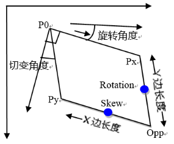

表示仿射矩形，例如几何定位的训练区域，Blob工具的仿射矩形ROI区域。

| 分类 | 接口名称 | 接口描述 |
|---|---|---|
| 构造 | scAffineRect | scAffineRect()默认构造函数。 |
| scAffineRect | scAffineRect(sc2XformLinear)构造函数。 | |
| scAffineRect | scAffineRect(sc2Vector, sc2Vector,sc2Vector)构造函数。 | |
| scAffineRect | scAffineRect(sc2Vector, double, double, scRadian, scRadian)构造函数。 | |
| 函数 | SetAffineRectFromUnitSq | 设置仿射变换。 |
| SetCornersPoPxPy | 设置仿射矩形原点cornerPo，x角点cornerPx，y角点cornerPy。 | |
| SetCenterLengthsRotAndSkew | 设置仿射矩形中心center，x边长xLen，y边长yLen，x边旋转角度xRotation和切变角skew。 | |
| SetCornerPoLengthsRotAndSkew | 设置仿射矩形原点cornerPo，x边长xLen，y边长yLen，x边旋转角度xRotation和切变角skew | |
| SetCenter | 设置仿射矩形的中心。 | |
| SetCornerPo | 设置仿射矩形的原点Po。 | |
| SetXLength | 设置仿射矩形的x边长。 | |
| SetYLength | 设置仿射矩形的y边长。 | |
| SetXRotation | 设置仿射矩形的x边旋转角度。 | |
| SetSkew | 设置仿射矩形的切变角度。 | |
| GetAffineRectFromUnitSq | 获取仿射变换。 | |
| GetCornerPo | 获取仿射矩形的原点Po。 | |
| GetCornerPx | 获取仿射矩形的x角点Px。 | |
| GetCornerPy | 获取仿射矩形的y角点Py。 | |
| GetCornerPopp | 获取仿射矩形对角点坐标。 | |
| GetCenter | 获取仿射矩形的中心。 | |
| GetXLength | 获取仿射矩形的x边长。 | |
| GetYLength | 获取仿射矩形的y边长。 | |
| GetXRotation | 获取仿射矩形的x边旋转角度。 | |
| GetYRotation | 获取仿射矩形的y边旋转角度。 | |
| GetSkew | 获取仿射矩形的切变角度。 |
功能：构造scAffineRect对象。
参数：无。
返回值：无。
功能：根据二维仿射变换构造scAffineRect对象，。
参数：
返回值：无。
功能：构造scAffineRect对象，设置原点为cornerPo，Px角点为conerPx和Py角点为cornerPy。
参数：
cornerPo：仿射矩形的原点，sc2Vector类型。
cornerPx：仿射矩形的Px点，sc2Vector类型。
cornerPy：仿射矩形的Py点，sc2Vector类型.
返回值：无。
功能：构造scAffineRect对象，设置中心为center，x边长为xLen，y边长为yLen，旋转角度为xRotation，切变角为skew。
参数：
center：仿射矩形的中心，sc2Vector类型。
xLen：仿射矩形的x边长，浮点数类型。
yLen：仿射矩形的y边长，浮点数类型。
xRotation：仿射矩形的旋转角度（弧度表示），scRadian类型。
skew：仿射矩形的切变角（弧度表示），scRadian类型。
返回值：无。
功能：设置仿射变换。
参数：
返回值：bool类型，表示是否设置成功。
功能：设置仿射矩形的原点，Px角点和Py角点。
参数：
cornerPo：仿射矩形的原点，sc2Vector类型。
cornerPx：仿射矩形的Px点，sc2Vector类型。
cornerPy：仿射矩形的Py点，sc2Vector类型.
返回值：bool类型，表示是否设置成功。
功能：设置仿射矩形中心为center，x边长为xLen，y边长为yLen，旋转角度为xRotation，切变角为skew。
参数：
center：仿射矩形的中心，sc2Vector类型。
xLen：仿射矩形的x边长，浮点数类型。
yLen：仿射矩形的y边长，浮点数类型。
xRotation：仿射矩形的旋转角度（弧度表示），scRadian类型。
skew：仿射矩形的切变角（弧度表示），scRadian类型。
返回值：bool类型，表示是否设置成功。
功能：设置仿射矩形原点为cornerPo，x边长为xLen，y边长为yLen，旋转角度为xRotation，切变角为skew。
参数：
cornerPo：仿射矩形的原点，sc2Vector类型。
xLen：仿射矩形的x边长，浮点数类型。
yLen：仿射矩形的y边长，浮点数类型。
xRotation：仿射矩形的旋转角度（弧度表示），scRadian类型。
skew：仿射矩形的切变角（弧度表示），scRadian类型。
返回值：bool类型，表示是否设置成功。
功能：设置仿射矩形的中心。
参数：
返回值：bool类型，表示是否设置成功。
功能：设置仿射矩形的原点。
参数：
返回值：bool类型，表示是否设置成功。
功能：设置仿射矩形的x边长。
参数：
返回值：bool类型，表示是否设置成功。
功能：设置仿射矩形的y边长。
参数：
返回值：bool类型，表示是否设置成功。
功能：设置仿射矩形的x边旋转角度。
参数：
返回值：bool类型，表示是否设置成功。
功能：设置仿射矩形的切变角度。
参数：
返回值：bool类型，表示是否设置成功。
功能：获取仿射变换。
参数：无。
返回值：仿射变换，sc2XformLinear类型。
功能：获取仿射矩形的原点坐标。
参数：无。
返回值：仿射矩形的原点坐标，sc2Vector类型。
功能：获取仿射矩形的Px角点坐标。
参数：无。
返回值：仿射矩形的Px角点坐标，sc2Vector类型。
功能：获取仿射矩形的Py角点坐标。
参数：无。
返回值：仿射矩形的Py角点坐标，sc2Vector类型。
功能：获取仿射矩形的对角点坐标。
参数：无。
返回值：仿射矩形的对角点坐标，sc2Vector类型。
功能：获取仿射矩形的中心。
参数：无。
返回值：仿射矩形的中心，sc2Vector类型。
功能：获取仿射矩形的x边长。
参数：无。
返回值：仿射矩形的x边长，浮点数类型。
功能：获取仿射矩形的y边长。
参数：无。
返回值：仿射矩形的y边长，浮点数类型。
功能：获取仿射矩形的x边旋转角度。
参数：无。
返回值：仿射矩形的x边旋转角度，scRadian类型。
功能：获取仿射矩形的y边旋转角度。
参数：无。
返回值：仿射矩形的y边旋转角度，scRadian类型。
功能：获取仿射矩形的切变角度。
参数：无。
返回值：仿射矩形的切变角度，scRadian类型。
无
无